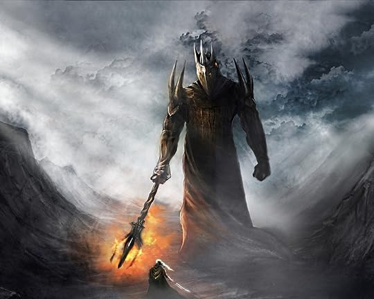

timeline
the before time peoriad is from illuvitar makeing the ainur to the making of the lamps
this age is the age of working for the ainur and the avils of melkor
in this age we will see the first sundering of the elvs to the kinslaying
this website is a giude to the early days af arda
to use this site click on the age of arda that you wish to learn more about that age
